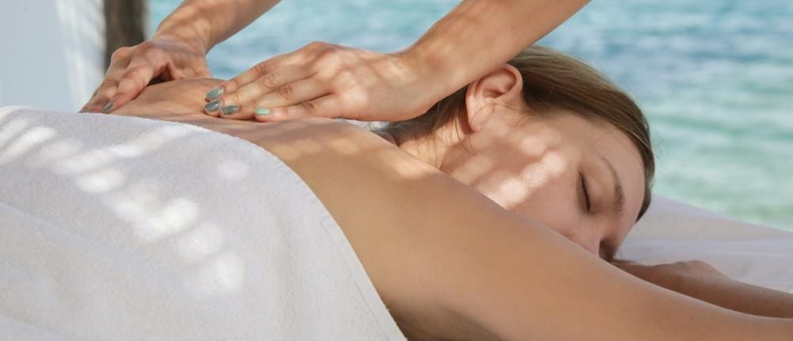
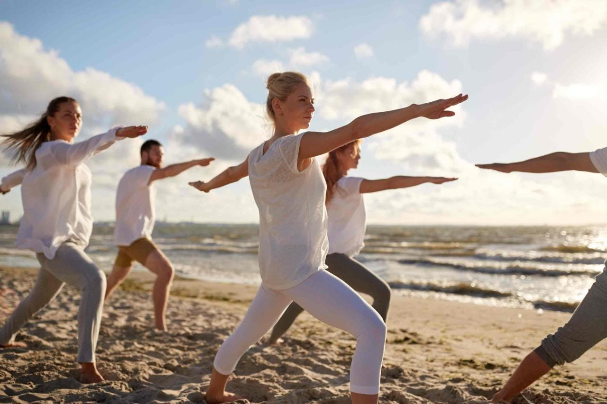
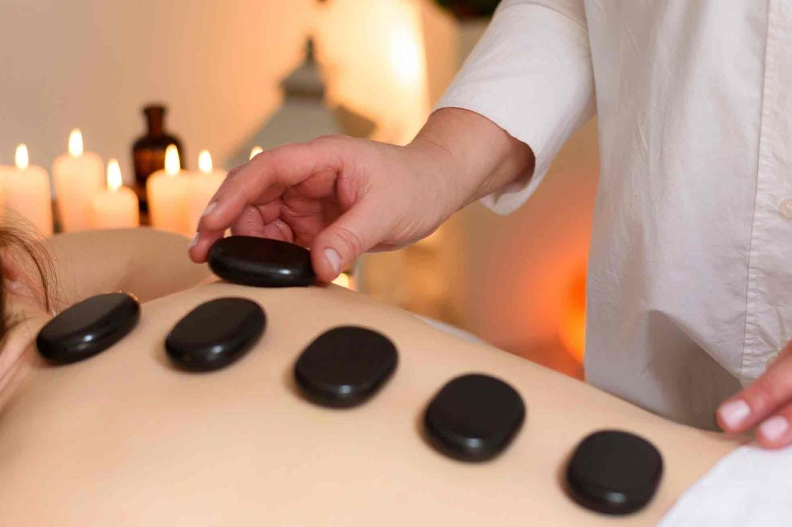

Have a 35% higher than average saline concentration, so swimming isn’t just fun: it comes with wellness benefits. Egypt’s Red Sea beach towns—including Hurghada, Al Gouna, Soma Bay, and Sahl Hasheesh—are home to world-class spas and resorts offering a variety of holistic health and pampering treatments.

centers that mainly focuses on seawater-based wellness techniques. Sahl Hasheesh is also a prime destination for people who wish to take time away from the crowds to rest and relax by the glistening waters of the Red Sea.

also has its fair share of luxury resorts and spas, while the serenity and fresh mountain air in places like Dahab, Nuweiba, and St. Catherine boosted their popularity as wellness retreat destinations where the energy is unbeatable! You can just grab your yoga mat and go out on the beach for a sunrise practice or climb a mountain to meditate.